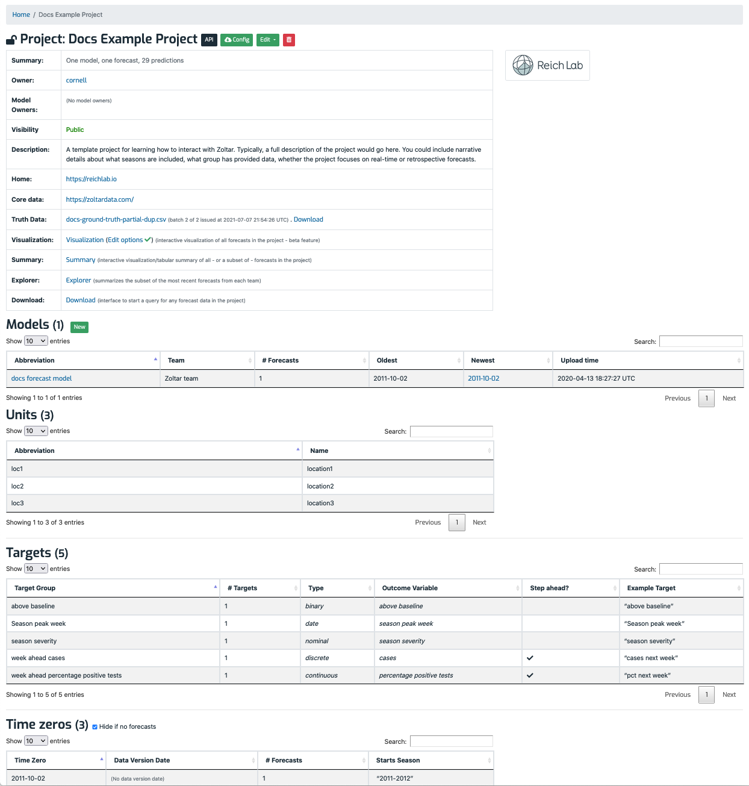

Project detail page¶
A project is the main element for representing a forecasting challenge. It has an owner (a registered user in the system), and zero or more model owners (also users in the system). A project owner can do anything to the project, but model owners are limited to creating, editing, and deleting forecast models, and uploading and deleting forecasts. (To become a model owner you must contact the project owner.)
Each project's detail page is divided into five vertical sections with bold headings, described next: Details table, Models, Units, Targets, and Time zeros. Here's an example (the bottom has been cut off):

Project details table¶
At the top of the page is a table showing this information related to the project:
- Summary: The same summary as on the home page: The number of models and forecasts in the project. Note that this may be an estimate.
- Owner: The user that has full control of the project, and includes authorization to view, edit, and delete anything (models, forecasts, etc.) The owner is the user that created the project (which is done on the home page).
- Model owners: A list of users who can view the project (applicable only if the project is private), and who can create and delete models, and upload and delete forecasts. The project owner specifies model owners when she creates or edits the project.
- Time Interval Type: Tells the D3 Foresight component what its x-axis label should be. Choices: Week, Biweek, or Month.
- Visibility: A project can be either public or private, which controls project visibility, including accessing data. Project owners set this when they create the project. Visibility applies to list and detail pages, along with API endpoints. Public projects are viewable by anyone, users and anonymous visitors included. Private projects can only be viewed by project owners and model owners. This means that in order to grant a user access to a private account, the project owner must add her to the project's model owners list, even if that user will not be managing any models.
- Description: Prose provided by project owner. It should cover these topics:
- Information about the "real-time-ness" of data, i.e., revised/unrevised.
- Details about how models interpret time zeros and data version dates.
- Data file naming scheme.
- Home: A link to the project's home page, which might include details about any competitions, source code, team members, included models, etc.
- Core data: A link to a page that contains data (e.g., CSV files) used to train models. For model competitions, it should include all data sets made available to everyone in the challenge, including supplemental data like Google queries or weather data. Ideally Zoltar users interested in re-running a project's models have all they need in the home and core data directories. However, they are not used directly by Zoltar.
- Truth data: A data file containing target ground truth that the project owner uploads. This data contains observed target values for time zeros and locations in the project, and is a project-agnostic way to capture actual values that models predicted for. It is used to calculate scores, and to extract the 'actual' data used in the D3 component's TimeChart. See Truth for details.
- Features: Links to various pages, including project explorer, forecasts summary, download forecasts, and download scores.
Forecast models¶
The Models section lists the project's forecast models by name, with links to model detail pages and each model's oldest and newest forecast details (see details below), with the latter being a link to that forecast's detail page. A model captures a team's prediction challenge effort, and includes forecasts for some or all time zeros defined for the project. (See Concepts for more about time zeros.) If you're a project owner or model owner then a "New" button is shown that takes you to a form for creating a model. Clicking on a model's name takes you to its model detail page.
Units¶
This section lists names of the units in the project. (See Concepts for more about time zeros.) These were defined by project owner when creating the project. Often units are used to represent locations or regions that targets apply to.
Targets¶
This section lists information about project forecast targets, which are a central Zoltar concept. See Targets for more about them. Like units, these were created by the project owner. Some of these parameters are optional - this table shows which apply based on target type.
The table includes the following columns:
- Target group: This column is either a target's name, or a derived name from a group of related targets (step-ahead ones whose step ahead increment is in the name).
- # Targets: How many targets are in the group, or 1 if not a group.
- Type: The target's type.
- Unit: E.g., "percent" or "week". Unit is used when previewing data, and when downloading it. (Be aware that it can be confusing having both unit objects as above along with a specific target's unit.)
- Step Ahead?: Shows two pieces of information: 1) Whether the target is a "step ahead" one, and (if so) 2) what the "step ahead increment" is. (Step ahead targets are used to predict values in the future, and are used by some analysis tools.)
- Example Target: A specific target's name if a group, or the one target's name otherwise.
Time zeros¶
This section details the project's time zeros . (See Concepts for more about time zeros.) It has these columns:
- Time zero: The date from which a forecast originates and to which targets are relative (i.e. a "2-week-ahead forecast" is two weeks ahead of the time zero). Every forecast has a time zero. See Concepts for more about time zeros.
- Data version date: An optional piece of metadata for a forecast. If it exists, it is associated with a time zero. It refers to the latest date at which any data source used for the forecasts should be considered. If present, it can be used externally by system users to recreate model results by "rolling back" the core data to a particular state.
- # Forecasts: A count of the number of forecasts for this time zero.
- Starts Season: Shows two pieces of information: 1) Whether the time zero is starts a season (it is blank if it does not start a season), and 2) the season name itself (which indicates that the time zero does start a season.)